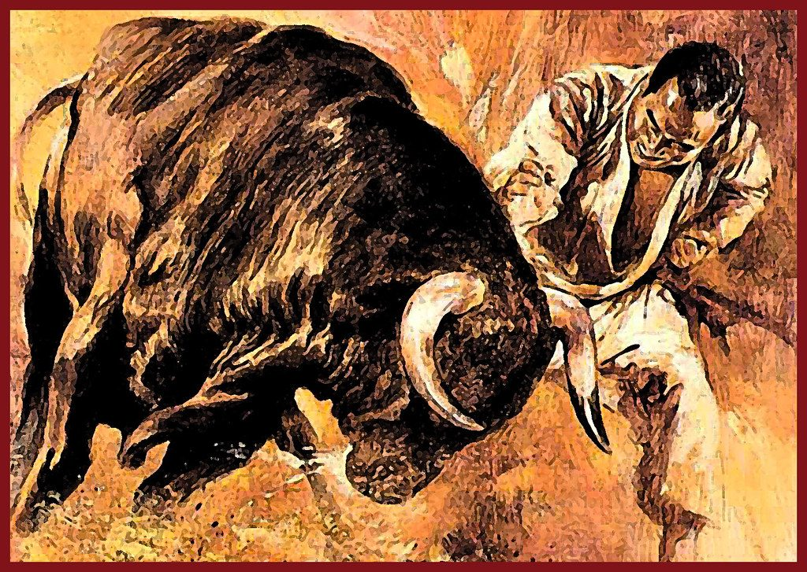

Биография
Масутацу Ояма родился 27 июля 1923 года в Корее, в городе Кимдже, провинции Чолла-Пукто, находившейся тогда под властью Японии, в семье родовитого янбана, и получил при рождении имя Чхве Ёнъи (кор. хангыль: 최영의, ханча: 崔永宜), и до того, как стать знаменитым, сменил несколько псевдонимов, среди которых были Чхве Бэдаль, Сай Моко, Гарю, Мас Того[2].
В начале XX века Корея была японской колонией, и права коренного населения ущемлялись. Имя, которое выбрал себе юноша — Масутацу Ояма — переводится как «Преумножающий свои достижения, подобно высокой горе» («О» в переводе с японского означает «большой, великий», «яма» — «гора»).
Когда ему исполнилось 9 лет, он переехал жить к сестре в поместье в Маньчжурии. Здесь у работающего в поместье мастера Йи начал изучение единоборств. В 12 лет Ояма вернулся в Корею и продолжил обучение. В 1938 году 15-летний Ояма поехал в Японию, чтобы стать военным лётчиком. Масутацу стал одним из первых японский военных лётчиков корейского происхождения.
Несмотря на тяжёлые условия жизни, юноша продолжал заниматься единоборствами, посещая школы дзюдо и бокса. В университете Ояма сдружился со студентами, занимающимися по методике знаменитого Фунакоси Гитина, выходца с Окинавы, создателя Сётокан. Это заинтересовало Ояму, и он отправился в додзё Гитина Фунакоси, чтобы изучать каратэ.
Учителя
Информация об учителях Оямы противоречива. В его многочисленных работах затруднительно отыскать имена его наставников. Ояма достаточно подробно описывает годы своего детства, но лишь вскользь упоминает, что изучал стили Сётокан и Годзю-рю «и другие», но пошёл собственным путём[3]. Утверждения Оямы порой противоречат друг другу. Проследить весь путь становления Оямы как мастера по этим обрывочным сведениям непросто. Создаётся впечатление, что Масутацу Ояма сознательно замалчивал имена своих учителей.
Однако сохранились некоторые, весьма почтительные, воспоминания Оямы о наставниках. Так, о Гитине Фунакоси он говорит: «Мастер Фунакоси выправил меня. Он показал мне подлинную суть карате».
Во время Второй мировой войны Ояма изучал дзюдо, школу айки дзю-дзюцу Дайто-рю у крупного мастера Котаро Ёсиды, о котором он пишет: «Я прочел множество книг и романов, посвященных боевым искусствам, но никогда не видел и не слышал о приёмах, столь замечательных, как приёмы моего учителя Ёсиды. Можно сказать, что его мастерство и искусство были совершенными…»[1].
Ояма изучал карате Годзю-рю под руководством корейца Со Нэйтю, ближайшего соратника знаменитого Ямагути Гогэна, впоследствии взявшего Ояму в ученики.
В 1956 году «Токийская ежедневная вечерняя газета» организовала показательные выступления и демонстрационную схватку между Масутацу Оямой и главой японской школы Годзю-рю Ямагути Гогэном, причем Ямагути вручил Масутацу Ояме сертификат на обладание 7-м даном Годзю-рю и званием кёси (почётное звание, учреждённое в июне 1901 года Дай Ниппон Бутоку-кай за особые достижения в преподавании будо). Запись о присвоении Ояме звания кёси — «наставника» — и степени 7-го дана, датированная 1954 годом, действительно имеется в Тетради фиксации сведений о присвоении мастерских степеней, и сделана она рукой самого Ямагути Гогэна.
Однако в 1956 году Масутацу Ояма неожиданно порвал с Ямагути Гогэном, основал новое додзё и начал пропагандировать собственный стиль карате. Достоверно известно, что конфликт между Масутацу Оямой и Ямагути был очень острым.
Уйдя от Ямагути, Ояма фактически порвал со всем миром карате, ведь для ортодоксально настроенных каратистов его поступок был ничем иным, как предательством по отношению к учителю. Многие представители японского карате и до этого неоднократно критиковали Масутацу Ояму за нарушение писаных и неписаных норм карате-до — за чрезмерную жестокость, проявленную в убийствах быков, за получение денег при демонстрации карате в США и т. д. Разрыв с Ямагути, похоже, переполнил чашу терпения и превратил Ояму в изгоя. Правда, позднее, когда школа Кёкусинкай набрала силу и превратилась в одну из крупнейших организаций карате в Японии, руководителям ведущих организаций при решении различных вопросов не раз приходилось садиться с ним за стол переговоров.
Со своей стороны на изгнание из мира карате Ояма отреагировал тем, что стал вымарывать собственный путь из истории боевых искусств, замалчивать имена своих реальных учителей и создавать мифологизированную историю своей жизни и своей школы, чтобы обеспечить её состоятельность в глазах широкой публики с морально-этической стороны.
Популяризатор карате
Масутацу Ояму можно назвать одним из самых выдающихся популяризаторов боевых искусств. В 50-х годах он совершил несколько зарубежных поездок, в ходе которых организовывал показательные выступления с демонстрацией техники карате и тамэсивари, проводил показательные бои. Благодаря пропагандистской деятельности Ояме удалось в сравнительно сжатые сроки создать одну из крупнейших организаций —Международную организацию карате (IKO).
В 1963 году Ояма построил штаб-квартиру (Хонбу) Международной организации карате (IKO), которая в 1964 году получила официальное название Кёкусин кайкан — «Дворец общества абсолютной истины».
В 1966 году небольшая команда учеников Масутацу Оямы в составе Куросаки Кэндзи, Накамуры Тадаси и Фудзихиры Акио приняла вызов, брошенный представителями таиландского бокса, и в матче с сильнейшими представителями муай-тай в Бангкоке одержала победу со счётом 2:1, поддержав репутацию карате.
Ученики
Ояма воспитал большое количество талантливых учеников, некоторые из которых основали собственные стили. Наиболее известными учениками Оямы являются:
- Стив Арнейл— президент IFK, 10-й дан, первый человек после самого Оямы, прошедший хякунин-кумитэ.
- Йон Блюминг— президент IBK, 10-й дан Кёкусинкай, 10-й дан Хапкидо. 9-й дан дзюдо, основатель Европейской организации карате Кёкусинкай.
- Сигэру Ояма — основатель Ояма-карате, 10-й дан Ояма-карате и 8-й дан Кёкусинкай.
- Хидэюки Асихара — основатель Асихара-карате.
- Тадаси Накамура — основатель Сейдо-карате.
- Адемир да Коста — основатель Сэйвакай.
- Такаси Адзума — основатель Дайдо Дзюку (Дайдо Джуку) (Кудо).
- Ёсикадзу Мацусима — президент, 9-й дан (Япония)[4]
Интересные факты
- Будучи корейцем по рождению, Ояма за годы службы в японской армии стал настоящим японцем и всерьёз увлёкся традициями самураев. В 1946 году, подобно легендарному мастеру меча Миямото Мусаси, он решил на время покинуть мир и обрёк себя на несколько месяцев добровольного отшельничества на горе Синобу. Там он прожил в построенной своими руками хижине в общей сложности 32 месяца, ежедневно тренируясь.[5] Всё это время он упражнялся в тамэсивари, обрубая ладонями стволы и ветки сосен, и выдержал несколько схваток с дикими зверями.[6]
- Согласно официальной версии, за свою карьеру Ояма победил на арене 52 быка. Из них у 48 он отрубил рога ударом ладони, а трёх убил[7].
- Масутацу Ояма был категорически против того, чтобы карате занимались женщины. Однако после того, как он побывал на одном из кумитэ с участием мастеров-женщин, то изменил своё мнение на этот счёт и даже использовал фотографии женщин для иллюстрации техники в своих книгах (например, «Классическое карате»).
В кинематографе
О жизни Масутацу Оямы сняты художественные фильмы «Обречённый на одиночество» («Kenka karate kyokushinken», Япония, 1975)[8][9] и «Воин ветра» (Южная Корея, 2004)[10]. Также Ояма послужил прообразом каратиста Ороти Доппо из аниме-сериала «Боец Баки».